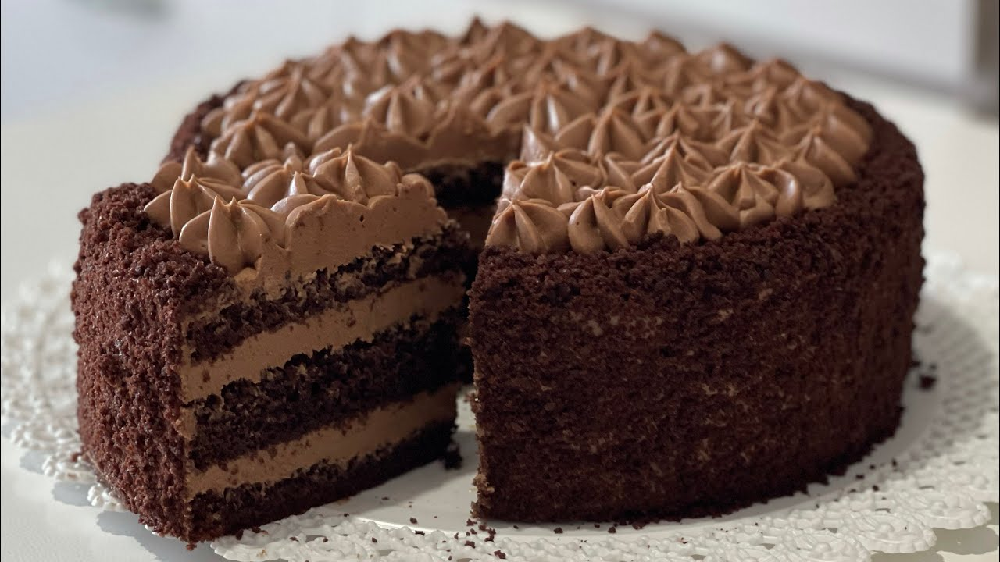

Tort de ciocolată cu cremă de mascarpone

Ingrediente
Blat cu cacao:
- 8 ouă
- 220 g zahăr
- 170 g făină
- 50 g cacao pudră
- un praf de sare
- 1 linguriță extract de vanilie sau 1 plic zahăr vanilat
Crema de ciocolată cu mascarpone:
- 600 g ciocolată cu min. 50% cacao
- 600 ml smântână naturală pentru frișcă, min. 30% grăsime
- 100 g zahăr
- 750 g mascarpone
- 30 g cacao pudră
În plus:
- 200 ml suc proaspăt de portocale
- 30 ml lichior de portocale (Cointreau, Grand Marnier, Triple Sec etc) - opțional
- 50 g coajă confiată de portocală
- Decoruri de ciocolată
Mod de preparare
1. Pregătirea blatului:
- Preîncălzește cuptorul la 180°C și unge două forme rotunde de 20 cm cu unt și tapetează-le cu hârtie de copt.
- Separă ouăle în gălbenușuri și albușuri.
- Bate albușurile cu un praf de sare până devin spumă tare.
- Într-un bol separat, bate gălbenușurile cu zahărul și extractul de vanilie până devin cremoase și palide.
- Cerne făina și cacaoa împreună pentru a evita cocoloașele și adaugă treptat în amestecul de gălbenușuri.
- Încorporează albușurile bătute în compoziție, cu mișcări ușoare de jos în sus, pentru a păstra aerarea blatului.
- Împarte aluatul în cele două forme și coace 25-30 minute sau până trece testul scobitorii.
- Lasă blaturile să se răcească complet pe un grătar.
2. Prepararea cremei de ciocolată cu mascarpone:
- Topește ciocolata pe bain-marie sau la microunde, amestecând frecvent.
- Bate smântâna pentru frișcă cu zahărul până devine fermă, dar nu foarte tare.
- Într-un bol mare, amestecă mascarpone cu cacaua pudră și apoi încorporează ciocolata topită.
- Adaugă frișca bătută treptat în crema de ciocolată, amestecând ușor de jos în sus pentru a păstra textura aerată.
3. Asamblarea tortului:
- Pune primul blat pe platou și stropește-l cu suc de portocale amestecat cu lichior (opțional).
- Întinde aproximativ jumătate din crema de ciocolată pe blat.
- Presară coajă confiată de portocală deasupra cremei pentru un plus de aromă.
- Pune al doilea blat deasupra și întinde restul de cremă pe suprafață și pe margini.
- Decorează tortul cu ciocolată rasă, fulgi de ciocolată sau orice alte decoruri preferate.
- Lasă tortul la frigider minimum 2-3 ore înainte de servire pentru a se întări crema și a se aromatiza.
Informații suplimentare
Timp de preparare: 1 oră + 2-3 ore răcire
Calorii: ~450 kcal / 100 g